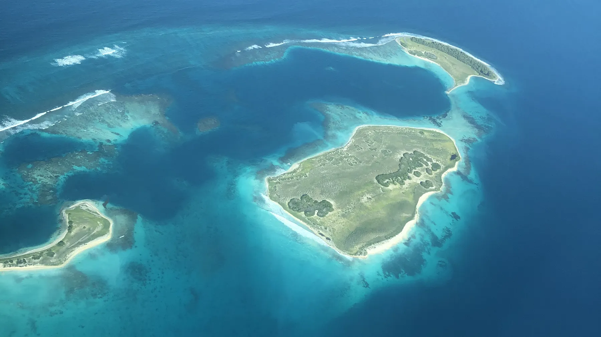
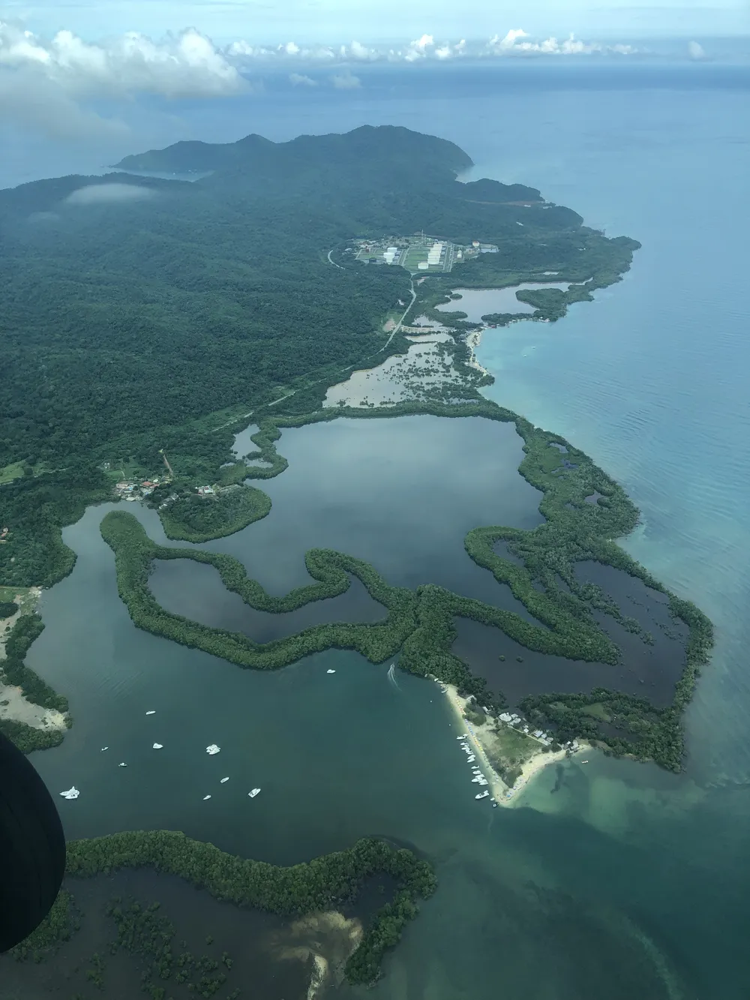
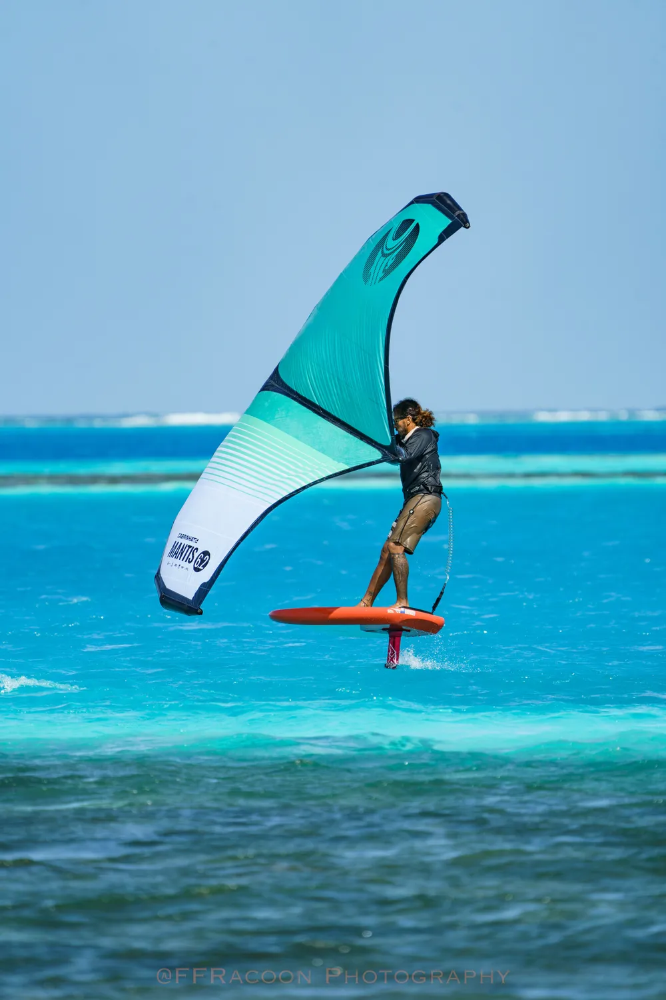
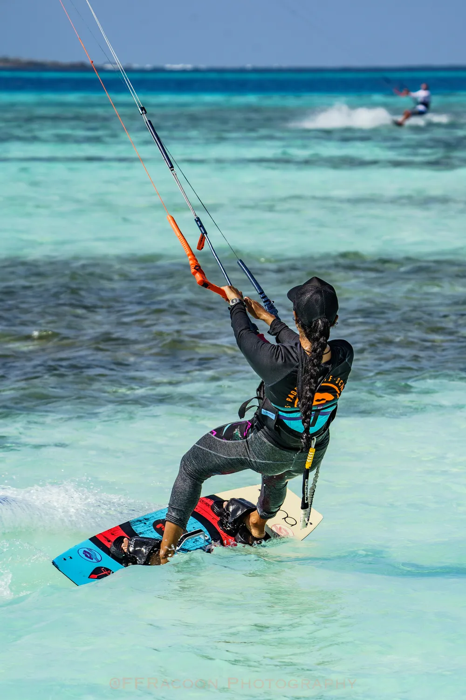
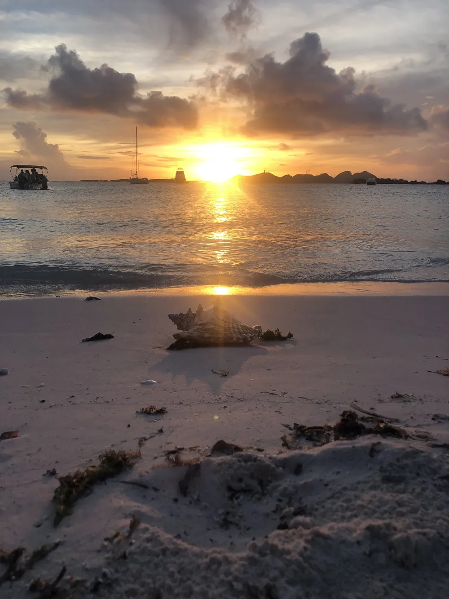
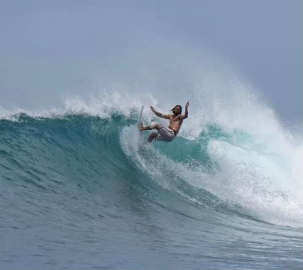
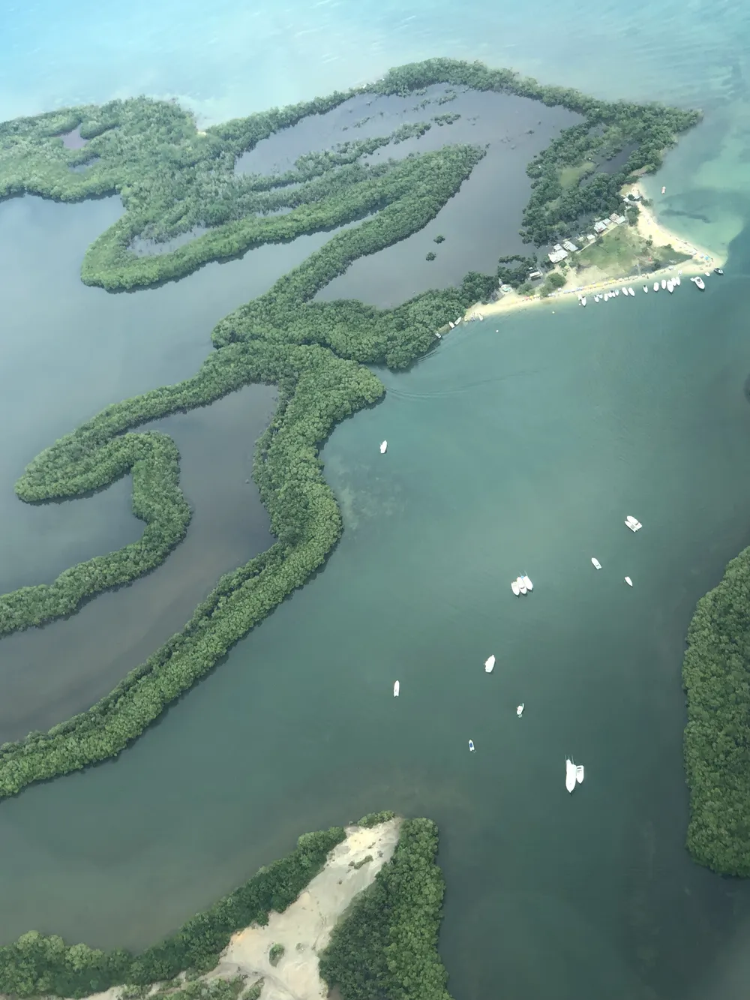

Los Roques
El santuario del viento y el cristal. Aguas totalmente planas, viento alisio y la visibilidad submarina más limpia del Caribe, en uno de los archipiélagos coralinos más prístinos del planeta.
Europa → Los Roques → Europa
De tu ciudad a Gran Roque
Te asesoramos en la compra de tu vuelo internacional con destino al aeropuerto de Caracas (CCS). Una vez allí, nosotros nos encargamos de todo: reservamos tus pasajes domésticos en avión chárter directo a Los Roques —40 minutos de vuelo— y te acompañamos en el terminal.
Cayos desiertos, un día cada uno
Los Roques es un Parque Nacional protegido de belleza hipnótica. Cada día salimos en embarcación a un cayo distinto: barras de arena blanca impecable, piscinas naturales protegidas por arrecifes y barreras de coral llenas de vida marina, sin multitudes.
Dormimos en posadas seleccionadas de Gran Roque, con habitaciones con aire acondicionado, baño privado, desayunos frescos y cenas de pescado del día frente al mar.
Y de regreso a casa
Cerramos la experiencia con el chárter de vuelta a Caracas y tu conexión internacional de regreso a Europa. Te vas con el cuerpo cansado del agua y la cabeza en otro sitio.
A Los Roques se puede ir en cualquier momento del año. Agua tibia, sol y cayos vacíos los doce meses.
Si vienes por el viento —kitesurf, windsurf o wingfoil— la temporada más fuerte y constante de alisios va de noviembre a junio. Fuera de esos meses el viento es más variable, así que ajustamos el plan hacia buceo, snorkel, paddle y navegación. Escríbenos con tus fechas y te decimos con franqueza qué vas a encontrar.
10 días entre cayos y agua plana
Cayo Francisquí & Cayo de Agua
Piscinas naturales protegidas por arrecifes de coral y la famosa barra de arena blanca, votada entre las mejores del mundo.
Viento de 18 a 25 Nudos
Brisa constante y pareja en temporada de alisios. Condiciones de entrenamiento e instrucción de nivel internacional.
Barrera Coralina & PADI
Paredes profundas de coral vivo, pecios hundidos, tortugas marinas y la posibilidad de sacar tu certificación PADI Open Water.
Chárter Privado de 40 Min
Vuelo directo Caracas–Los Roques–Caracas en avión chárter, con recibimiento y acompañamiento en el terminal.
Posadas con Encanto
Alojamiento B&B en Gran Roque: A/C, baño privado, desayunos frescos y cenas de pescado fresco frente al mar.
Reef-Safe & Zero Plastic
Cero plásticos de un solo uso, protectores solares biodegradables y respeto absoluto por las comunidades pesqueras locales.
Deportes en Los Roques
Los Roques es un spot de agua plana, no de olas: es justo lo que lo hace el mejor sitio del mundo para aprender y para volar. Si buscas surf de olas, ese está en Choroní y Margarita.
Kitesurf
Navegación en el agua plana de Francisquí y downwinders extremos hasta Cayo de Agua con lancha de apoyo privada.
Windsurf
Planeo ilimitado en la laguna turquesa de Gran Roque, con tablas y velas de marcas líderes incluidas.
Wingfoil
Aprende a levitar sobre el agua con remo o remolque de lancha, y luego vuela por tu cuenta entre cayos.
Buceo PADI
Curso Open Water completo con inmersiones en mar abierto, pecios hundidos y fotografía submarina.
Paddle & Snorkel
Recorre bajos de arena y manglares en paddleboard, y nada con tortugas sobre los arrecifes.





